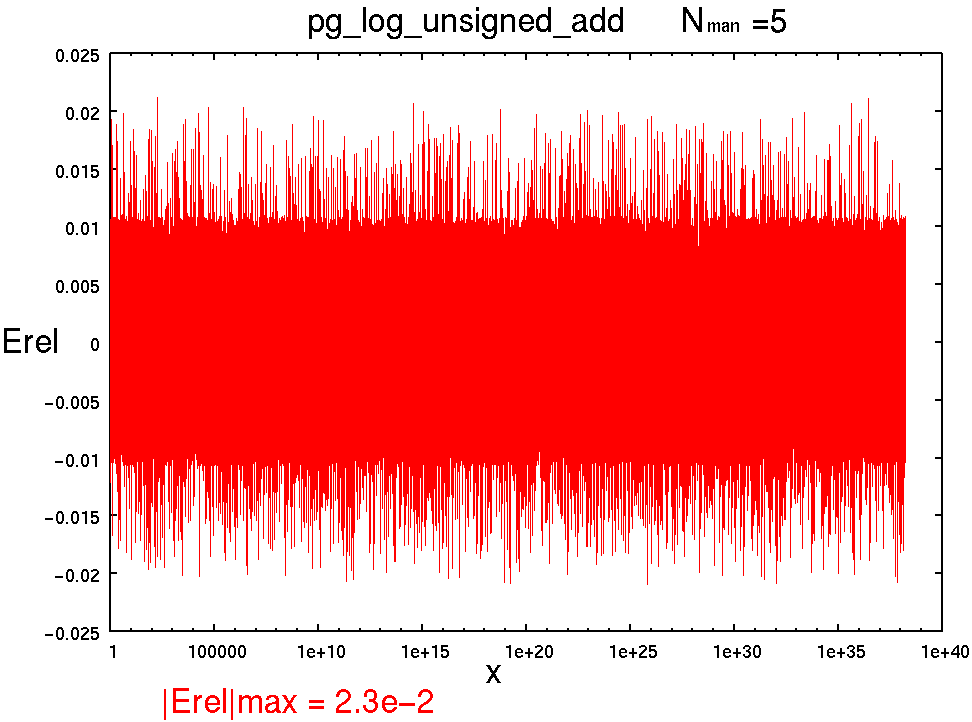
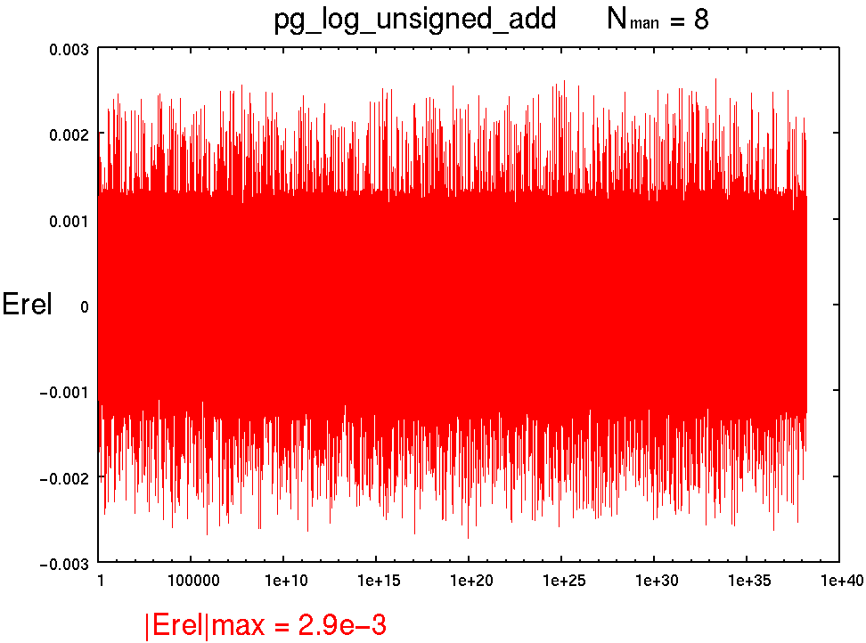
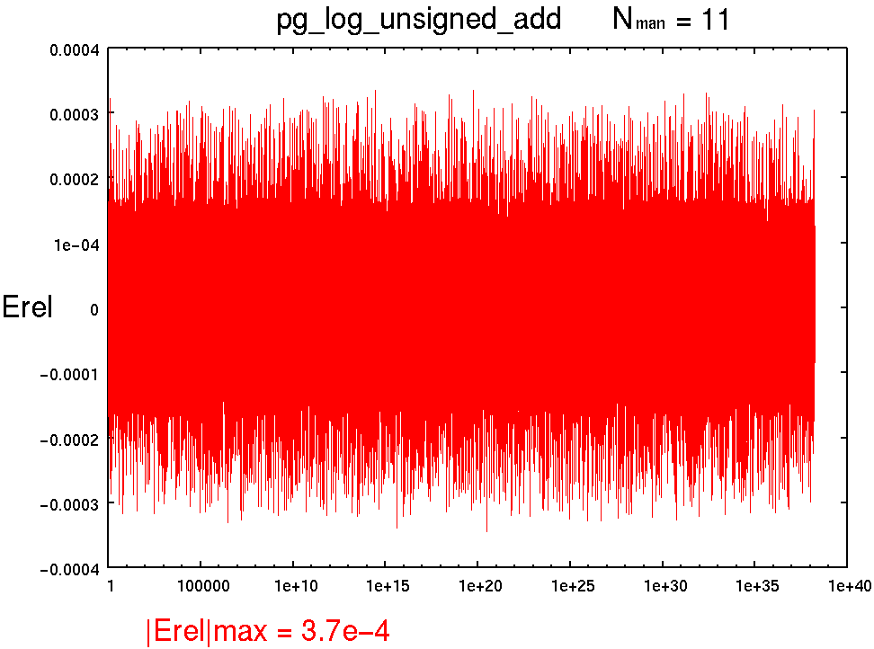

[↑TOP]
pg_log_unsigned_add : 対数型 符号なし加算
書式
pg_log_unsigned_add(x, y, z, NLOG, NMAN, NST);
引数
- x
- : 入力
- y
- : 入力
- z
- : 出力
- NLOG
- : 対数ワードビット幅
- NMAN
- : 仮数部(精度)ビット幅
- NST
- : パイプラインステージ数
記述例
pg_log_unsigned_add(x, y, z, 14, 5, 1);
pg_log_unsigned_add(x, y, z, 17, 8, 1);
pg_log_unsigned_add(x, y, z, 20, 11, 1);
概要
対数形式数 x, y との符号無し加算
内部関数テーブルは補間なし
NMAN=8以上はitp版を使いましょう.
パイプラインマップ(Altera/Xilinxで切り替え. 以下はXilinx用)
NST 1 : 1[-], 2[-], 3[O]
NST 2 : 1[O], 2[-], 3[O]
NST 3 : 1[-], 2[O], 3[O]
性能(Xilinx Virtex-II PRO XC2VP70-5FF1517C)
----------------------------------------------------------------------------------------
pg_log_unsigned_add(x, y, z, 14, 5, NST);
NFLO=14
NMAN= 5
NST, MHz , Cpath, Slices, FFs, LUTs
1 , 87.486, 0-3 , 81, 14, 124
2 , 124.368, 1-3 , 92, 45, 132
3 , 200.719, 0-1 , 73, 71, 119
演算精度 |Erel|max
-
pg_log_unsigned_add(x, y, z, 14, 5, 1);
|Erel|max = 2.3e-2

-
pg_log_unsigned_add(x, y, z, 17, 8, 1);
|Erel|max = 2.9e-3

-
pg_log_unsigned_add(x, y, z, 20, 11, 1);
|Erel|max = 3.7e-4

参照
Change Log
- 2004.10.26 : the first edition by T. Hamada
{kind=link}
{kind=link}
{kind=link}